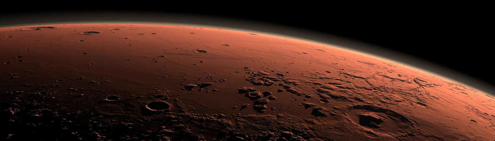

Навигация |
Информация |
|---|---|
Марсоход — планетоход, передвигающийся по поверхности Марса. Мягкая посадка марсоходов осуществляется с помощью спускаемых аппаратов. Марсоходом, в отличие от лунохода, невозможно управлять дистанционно в режиме реального времени из-за значительного запаздывания командных сигналов и сигналов от планетохода. Время запаздывания составляет от 4 до 21 минут в зависимости от взаимного положения Земли и Марса. Задержка возникает, поскольку радиосигналу вследствие конечности его скорости распространения требуется время, чтобы дойти до Марса или от него до Земли. Поэтому марсоходы способны некоторое время функционировать, в том числе передвигаться и выполнять исследования, автономно по заложенным в них программам, получая команды лишь время от времени. Всего на Марсе работали четыре марсохода для научных исследований. Один из них — «Кьюриосити» — продолжает работу и в настоящее время (по состоянию на 2019 год). |